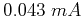
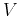

Solution:
The complete schematic diagram of the multimeter:
The following is the calculation of all 13 resistors in the diagram. Assume the negative input is ground (common input).
The resistance in meter branch is . The voltage across this branch when (full scale) is . The current through the 32 K resistor is . The combined current through these parallel branches is , and the resistance of these parallel branches is .
With another parallel branch of
added, the resistance
of the meter head assembly becomes
. For the meter
head to get the full scale current , the total current to these three
parallel branches needs to be
At this scale, the total resistance through the meter head branch is
Assume the resistor needed for measuring current at the scale is  , for
the meter to be at full scale, we need to have:
, for
the meter to be at full scale, we need to have:
At this scale, the total resistance in series with the voltage being measured
is
. This forms a voltage divider with the meter head
assembly, and the voltage across it is:
Assume the resistor needed for measuring voltage  at the scale is  , for
the meter to be at full scale, we need to have:
, for
the meter to be at full scale, we need to have:
Assume the resistor needed for measuring voltage at the scale is  , for
the meter to be at full scale, we need to have:
, for
the meter to be at full scale, we need to have:

The resistance of two parallel branches (meter and resistor) is: